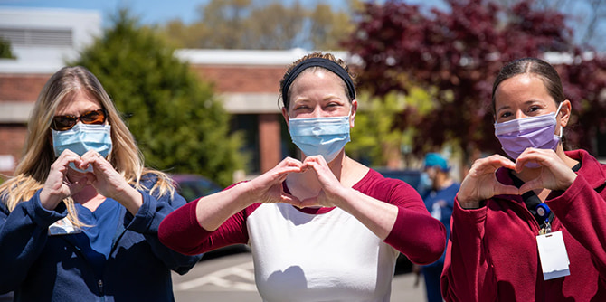

למשבר קורונה הייתה השפעה עמוקה על חייהם של אזרחי ישראל. עם עליית מספר המקרים והסגר שהוטל עליהם, מצבם של רבים מהם הידרדר במהירות. שיעור האבטלה זינק באופן חסר תקדים, הורים נאלצו לפקח על הלמידה מרחוק של ילדיהם, ומצבן של אוכלוסיות מוחלשות הידרדר יותר ויותר.
מתוך הבנה של חומרת המצב העמידה קרן מנדל תרומה של 4.8 מיליון דולר כדי לסייע לחברה הישראלית להתמודד עם האתגרים שיצר המשבר. כ-3.6 מיליון דולר מסכום זה הוענקו למגוון רחב של עמותות וארגונים בישראל, מהם חצי מיליון דולר לעיריית ירושלים, והשאר – כמיליון דולר – הוקצו ל-94 יוזמות חיוניות שהשיקו בוגרי מנדל כדי להתמודד עם המשבר במגזרי החברה השונים. מתוך 94 המענקים, ל-8 יוזמות הוענקו 75,000 שקלים; ל-30 יוזמות הוענקו 50,000 שקל; ול-56 הוענקו 25,000 שקל.
יוזמות ייחודיות אלו, שנתנו מענה לכמה מן הצרכים הדחופים ביותר של החברה, נוצרו כדי לסייע למגוון רחב של קהילות, בהן יהודים, ערבים, בדואים, דרוזים, תושבי מזרח ירושלים, חרדים, מבקשי מקלט ונשים ללא אזרחות. הפרויקטים נועדו לשרת אוכלוסיות הכוללות נוער בסיכון, ילדים עם צרכים מיוחדים, אימהות יחידניות, נפגעות ונפגעי אלימות במשפחה, משפחות נזקקות, קשישים, אנשים עם מוגבלות וצוותים רפואיים. היוזמות התמקדו בתחומים כמו הכשרה מקצועית, למידה מקוונת, חוסן קהילתי וחלוקה של מזון, תרופות וציוד הגנה. רבים מהפרויקטים יועדו ליישום באזורי פריפריה.
בהמשך אפשר למצוא תיאור מעמיק של שש מהיוזמות מעוררות ההשראה והמשפיעות הללו של בוגרי מנדל:
-
נוער אתיופי: "כוח חירום" בקהילה – יוזמה של
ד"ר נגיסט מנגשה, בוגרת מחזור ג' בבית ספר מנדל למנהיגות חינוכית ומנהלת עמותת "פידל" – עמותה שהקימה כדי לקדם את שילובם המלא של יוצאי אתיופיה בחברה הישראלית.
-
הגנה על נשים ערביות מפני התעללות ורצח – פרויקט שיזמה
סמאח סלאימה, בוגרת מחזור כ"א בבית ספר מנדל למנהיגות חינוכית ומנהלת "נע"ם – נשים ערביות במרכז".
-
שמירה על שגרה לתלמידי החינוך המיוחד – תוכנית חירום שפותחה על-ידי עמותת "חינוך ועתיד", עמותה שהקים
אלחנן ויסנשטרן, בוגר תוכניות מנדל לפיתוח מנהיגות בקהילה החרדית.
-
תמיכה בפריפריה בזמן משבר הקורונה – תוכנית שהושקה על-ידי
ניסים אלמקייס, בוגר תוכנית מנדל למנהיגות מקומית בירוחם וברמת הנגב ומייסד סניף "מאיר פנים" בדימונה-ירוחם.
-
מניעת אלימות במשפחה באמצעות שיקום תעסוקתי – יוזמה של
דוריס מור, בוגרת מחזור י"ב בבית ספר מנדל למנהיגות חינוכית ומייסדת מכון "עוגנים" ותוכנית "אל תלכי לבדך".
-
חיזוק החוסן הקהילתי במצב חירום מתמשך – שיתוף פעולה לאומי רב-ארגוני בניהולם של שני בוגרי בית ספר מנדל למנהיגות חינוכית:
גיא צפוני, מנהל ארגון "אסטרטגיות קהילתיות", וד"ר שרה שדמי-וורטמן, מומחית בכירה בתחום הקהילה.
פרויקט נוסף שקיבל תמיכה הוא פרויקט של ד"ר מיכל חמו-לוטם, בוגרת מחזור ב' בבית ספר מנדל למנהיגות חינוכית, ומנכ"לית "אושיה". היוזמה של מיכל תומכת בנשים העובדות במערכת הבריאות, ואשר הושפעו מהמשבר בכל תחומי חייהן. נשים אלו, הנמצאות בחזית, קיבלו סיוע באמצעות קבוצות תמיכה, חונכות חירום ובניית קהילה.
יואב ברוור, בוגר מחזור ד' בתוכנית מנדל למנהיגות נוער ומייסד המרכז לחינוך סייבר, יזם פרויקט שהיה רלוונטי במיוחד בתקופה שבה נסגרו בתי הספר. הוא פיתח קורסים מקוונים ותהליך קבוצתי מובנה ומונחה, המאפשר לבני נוער מהפריפריה לרכוש מיומנויות מחשב, כולל תכנות, ולשפר את כישורי פתרון הבעיות שלהם בסביבה תומכת.
יוזמה נוספת הובילה יעל בונה לוי, בוגרת מחזור ג' בבית ספר מנדל למנהיגות חינוכית ומייסדת עמותת "לשובע". במהלך המשבר רכשה עמותת לשובע סלי מזון, חיתולים ותחליפי חלב עבור 216 משפחות של מבקשי מקלט ומהגרי עבודה, והעניקה להן סיוע עד שההורים יכלו שוב לצאת לעבודה.
העלייה החדה באבטלה במהלך המשבר עוררה את הצורך הדחוף לסייע לבדואים צעירים למצוא עבודה מתאימה. הנד אבו ג'עפר, בוגרת תוכנית מנדל למנהיגות קהילתית ברהט, סייעה לכ-40 צעירים בדואים (גילאי 45-25) שפוטרו, שנמצאים בתת-תעסוקה או כאלה שנכנסו זה לא מכבר לשוק העבודה, למצוא משרות מתאימות שדרכן יוכלו להשתלב בהצלחה בשוק העבודה.
אופיר ליבשטיין, בוגר מחזור ב' בתוכנית מנדל למנהיגות אזורית בבאר שבע וראש מועצת שער הנגב, פיתח יוזמה שמטרתה לסייע לבעלי עסקים קטנים ועצמאיים על-ידי תמיכה בקהילה העסקית המקומית. זאת באמצעות לימוד עמיתים, רישות, קנייה מעסקים מקומיים וקיימות.
תייסיר עתאמנה, בוגר תוכנית מנדל למנהיגות מקומית בבאקה אל-גרבייה ומייסד עמותת גיל הזהב, הקים יוזמה שמטרתה לספק לקשישים בבאקה אל-גרבייה פעילויות העשרה מרחוק, להקל על בדידותם ולסייע להם בגישה לשירותים נחוצים.
בתיה ברקוביץ', בוגרת תוכנית הפיילוט של מסלול הנשים בתוכניות מנדל לפיתוח מנהיגות בקהילה החרדית, יזמה פרויקט להגנה על ילדים חרדים מפני התעללות מינית במהלך המשבר. במסגרת הפרויקט נערכה סדנה מקוונת שמטרתה להכשיר את המורים ליצור קשר ישיר ועקיף עם ילדים, לזהות מצבי משבר ולספק מעקב ביקורתי. כחלק מהיוזמה התקיים מסע פרסום המכוון לקהילה החרדית, ובו פרטים ליצירת קשר לשם קבלת תמיכה.
כדי לסייע לקהילה הדרוזית יזם לוטפי חרב, בוגר מחזור ט' בתוכנית מנדל למנהיגות חינוכית בצה"ל ומייסד עמותת "אפיקים לעתיד" פרויקט בשם "מחשב לכל ילד". המעבר מלמידה בכיתה ללמידה מרחוק היה בעייתי במיוחד עבור ילדים דרוזים בכפרים עניים, שלעתים קרובות אין להם מחשבים בבית. במסגרת היוזמה של לוטפי נרכשו מחשבים למי שלא ברשותם מחשב, ושופצו מחשבים ישנים באמצעות חברה המעסיקה אנשים עם צרכים מיוחדים.
עדה טרוסמן, בוגרת מחזור ד' בתוכנית מנדל לבכירים בשירות הציבורי ומייסדת עמותת "אשה לאשה", יזמה פרויקט למתן סיוע ממוקד, מותאם אישית ומידי לנשים בסיכון. תוכנית החירום שלה בתקופת הקורונה העניקה סיוע לנשים ללא מעמד אזרח וייסדה קרן חירום למזון, לשכר דירה, לטיפולים רפואיים ולצרכים הקשורים בילדים. הקו החם לשאלות ולמקרי חירום האריך את שעות הפעילות שלו ופעל 24 שעות ביממה, 7 ימים בשבוע. כמו כן הוקמו מוקדים טלפוניים למידע בכל השפות הרלוונטיות.
קרן מנדל גאה ביוזמות המועילות ומעוררות ההשראה שייסדו בוגרינו במהלך המשבר ובתפקידי המנהיגות היצירתיים שנטלו על עצמם בתקופה קשה זו. אף שרק מעטות מבין 94 היוזמות שקיבלו תמיכה מהקרן מוזכרות במאמר זה, אנו גאים על תרומתן העצומה לקהילות עצמן ולישראל כולה.
מעבר למענקים שהוענקו ליוזמות הבוגרים, העניקה יחידת בוגרי מנדל סיוע אישי בסכום כולל של מיליון שקלים ליותר ממאה מבוגרי תוכניות קרן מנדל-ישראל שנקלעו לקיים כלכליים במהלך המשבר.
{kind=link}